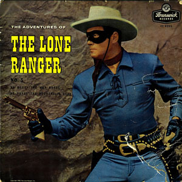

Первый в мире сериал
«Одинокий рейнджер» или «The Lone Ranger» - таково название первого в мире телевизионного сериала, который был показан в Соединенных Штатах Америки. Он выходил один раз в неделю, и его демонстрация длилась с 1949 года по 1957 год. В главных ролях снимались: Джей Сильверилс, Клейтон Мур, Джерри Потер, Джон Харт и другие. Действие фильма происходит в далекие времена, когда шесть техасских рейнджеров охраняя порядок на диком Западе, попадают в засаду свирепствующей здесь банды.
В результате перестрелки пять рейнджеров погибли, шестой был тяжело ранен. Умирающего представителя закона нашел и выходил индеец по имени Тонто (Джей Сильверлис). Выздоровевший рейнджер и его новый краснокожий друг встали на тропу войны против банды, жестоко расправившейся с его товарищами. И после того, как бандиты и их главарь предстали перед судом, благородный герой и его верный друг продолжили бороться со злом.
Одинокий рейнджер и индеец Тонто встали на защиту справедливости и закона для всех обосновавшихся на диком Западе США. Сюжет будущего сериала впервые появился в радио-шоу в январе 1933 года. С появлением на экранах телевидения человека в маске на белом коне и краснокожего индейца, занятых поисками правды и справедливости, у многих американцев осталось неизгладимое впечатление об их подвигах.
Одинокий рейнджер – это обобщенный образ техасских рейнджеров, миллионы американцев в нескольких поколениях воспитывались на этом образе. Показ телесериала имел громадный успех и, хотя по замыслу авторов он рассчитывался на аудиторию школьного возраста, от экранов телевизоров не отходили и миллионы взрослых американцев. Сериал стал настолько популярным, что трансляция эпизодов фильма, ранее вышедших на экраны телевидения, постоянно повторялась.
Последние эпизоды этого сериала были показаны в июне 1957 года, а в сентябре этого же года он закончился. Безусловно, у телевизионных программ сети АВС в это время был самый высокий рейтинг, сам же телевизионный сериал «Одинокий Рейнджер» стал первым настоящим хитом, который оставил неизгладимый след в умах американской нации.